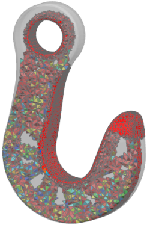
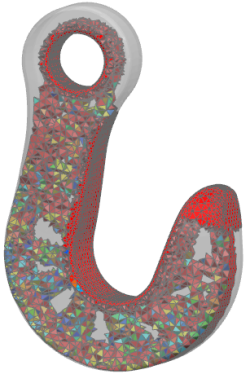

分析拓扑优化结果
在求解优化后，可以在后处理中对模型的更改进行可视化。
拓扑优化的结果将作为优化模型中的标准化材料分布。对于每个单元来说，优化过程将查找单元密度。它会将这些密度值保存到 OP2 结果文件。

在优化过程中定义的相关结果的值(例如，目标或约束的标量值)可用于优化电子表格中的每次迭代。

在求解优化后，可以在后处理中对模型的更改进行可视化。
拓扑优化的结果将作为优化模型中的标准化材料分布。对于每个单元来说，优化过程将查找单元密度。它会将这些密度值保存到 OP2 结果文件。

在优化过程中定义的相关结果的值(例如，目标或约束的标量值)可用于优化电子表格中的每次迭代。